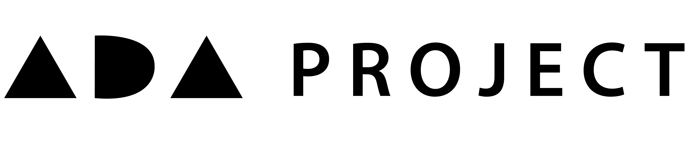
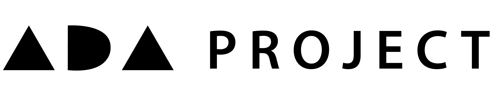

The ADA Project is an open textbook where we aim to organise questions as well as answers and different approaches to the question. The site is created by one person and the aim is for everyone to contribute to build up a huge database of questions from all subjects. Maths is being focussed on initially and we hope to grow.
Start by clicking on the menu on the left. Select your topic and subtopic and find which question you want to approach. If you are familiar with it you may wish to work out the solution on your own. Then compare the answer. If incorrect have a look through the solution and video to work out where to improve. If still unsure have a look through and contribute to the discussion on each question, in order to improve solutions and videos.
If you are unsure how to approach a question it may be worth looking through some solutions and videos. Once you have the idea, you can approach a similar question and check your answer.
a: answer Find the simple answer to the problem.
s: solution Find a more thorough worked through solution to the problem with step-by-step working out.
v: video Find a video to explain thoroughly the question, including why each step works and the reasoning behind it.
d: discussion Still unsure or want to discuss the question? Discussion allows you to talk to others and share ideas about the questions including feedback or other approaches.
Have a look at the SUBMIT page for more information. The more contributed, the better the site!
ADA is after Ada Lovelace - a Mathematician and the writer of the world’s first machine algorithm for an early computing machine that existed only on paper. The ADA Project is starting with Mathematical solutions, shown online. Therefore naming the site after Ada Lovelace seemed relevant.
 
